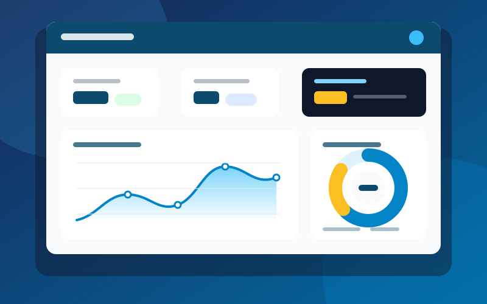

Diagnóstico antes de construir
Investigamos el proceso, las personas y los datos antes de proponer una pantalla o una automatización.
Portafolio IntraNerd
Cuatro formas de resolver problemas reales con tecnología: una plataforma escolar, un portal logístico, un sistema de reservas y un tablero de decisiones.
Qué nos destaca
Cada proyecto combina método, diseño y acompañamiento. Estos son los cuatro diferenciadores que sostienen nuestro trabajo.
Investigamos el proceso, las personas y los datos antes de proponer una pantalla o una automatización.
Mostramos avances cada pocas semanas para validar decisiones y evitar sorpresas al final del proyecto.
Priorizamos claridad, accesibilidad y rapidez. La herramienta debe entenderse sin manuales interminables.
Capacitamos, documentamos y monitoreamos. El lanzamiento es el comienzo del uso real, no el final.
Proyectos ficticios
Ejemplos de portafolio con contexto, alcance, tiempo estimado y presupuesto aproximado. Cada tarjeta se puede desplegar para ver más detalles.
Plataforma escolar integral para centralizar calificaciones, tareas, talleres y comunicados en una experiencia simple para alumnos, docentes y familias.
Portal de seguimiento de despachos para pymes que necesitan visibilidad en tiempo real, avisos automáticos y una experiencia clara para sus clientes.
Sistema de reservas para clínicas y centros de atención que reduce llamadas, ordena la agenda y confirma las horas automáticamente.

DatosTablero de indicadores para fundaciones y equipos directivos que necesitan entender su impacto sin revisar diez planillas distintas.
Preguntas y respuestas
Resolvemos las dudas que aparecen cuando una organización decide dar el paso hacia una solución digital.
¿No ves tu caso? Escríbenos y lo conversamos sin compromiso.
Podemos diagnosticar un proceso, diseñar una plataforma, automatizar tareas, integrar sistemas existentes o construir un portal para tus usuarios. También ofrecemos soporte, capacitación y mejora continua después del lanzamiento.
Partimos con una etapa de descubrimiento para entender el problema, los usuarios y las restricciones. Luego prototipamos, validamos y planificamos entregas cortas. Cada etapa termina con algo que puedes ver y probar.
Trabajamos con organizaciones de distintos tamaños. Adaptamos el alcance y la inversión al problema real, priorizando una primera versión útil antes de sumar funcionalidades.
Aplicamos permisos por rol, cifrado en tránsito, respaldos y registro de cambios. Antes de construir definimos qué datos son necesarios y evitamos almacenar información que no aporta al servicio.

Nerdi aprueba
Nuestro copiloto de ideas nos ayuda a no enamorarnos de la primera respuesta. Prototipamos, preguntamos y ajustamos hasta que la herramienta se sienta natural.
Cuéntanos tu desafíoCuéntanos qué necesitas resolver y te ayudaremos a convertirlo en un proyecto claro, medible y posible.